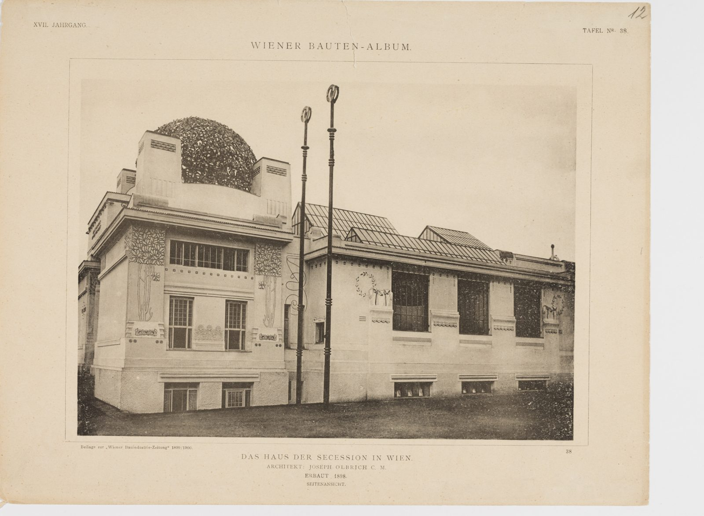

References / Architecture / 327
Secession Building, Vienna
Joseph Maria Olbrich’s exhibition house of 1898: white cubic blocks with flat pylons around a dome of pierced metal laurel leaves.
- Source
- Wikipedia: Secession Building
- Creator
- Joseph Maria Olbrich
- Made
- 1897–1898
- Style
- Vienna Secession (agent-proposed, not yet reviewed by a person)
- Moods
- Monumental, austere, elegant
- Evidence
- Inspected two Wien Museum photographs (3500 px wide): the plate “Das Haus der Secession in Wien, Seitenansicht” from the Wiener Bauten-Album, 1899–1900 (inv. 54584/14), and a postcard of about 1905 by Deutsch’s Postkartenverlag (inv. 309795). Both are black and white, so they do not show the colour of the dome.
- Reviewed
- Rights
- Open license, stored. License: CC0-1.0. Rights policy
Context
Wikipedia: the building was completed in 1898 by Joseph Maria Olbrich as an architectural manifesto for the Vienna Secession. It holds Gustav Klimt’s Beethoven Frieze. The motto “Der Zeit ihre Kunst. Der Kunst ihre Freiheit” is written above the entrance. Wikipedia.
The Wiener Bauten-Album plate is captioned “Das Haus der Secession in Wien. Architekt: Joseph Olbrich C. M. Erbaut 1898. Seitenansicht.” It was a supplement to the Wiener Bauindustrie-Zeitung, 1899/1900. Wien Museum 54584/14.
Observed
- The front block is a white cube with sharp corners. Four flat pylons rise from its top and frame a round dome.
- The dome is a pierced ball of metal leaves, dark against the sky in both photographs.
- The side wall of the front block carries tall stylized trees in low relief, with leafy crowns at the top corners, and small bands of square dots under the windows.
- The long exhibition wing behind is plain white with large windows, small laurel wreaths in relief, and a row of glass roof lanterns.
- Two tall flagpoles with ring tops stand in front of the side wall.
- The plate is printed on cream paper with a thin ruled frame and centred captions in spaced capitals.
Why it belongs
The massing already shows the geometric turn: cubes, flat pylons, and a single round form on the axis. The plant reliefs still belong to the floral early Secession, which this catalogue files under Art Nouveau.
The dome is the one rich, textured element on a plain white building; in flat design it corresponds to one gold or patterned element on a white ground.
Borrow
Set one round or gold element on the central axis, framed by plain square blocks.
Use small rows of square dots as a band under a heading or a window-like panel.
Measured
Machine-extracted by tools/image-traits.py on . Full measurement.
- Mean chroma
- 0.13
- Palette
- #e5d5bf 51%
- #ebebeb 10%
- #b3a48c 7%
- #dbcbb3 7%
- #c5b59d 6%
- #5b5043 3%
- #6b5f4f 3%
- #7a6d5c 3%

